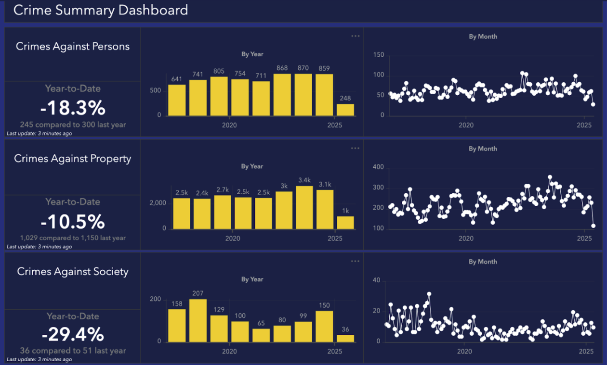

For college students in Chicago and their families, safety is a central concern. While fears about crime influence decisions on where to attend school or live, particularly when news headlines and social media amplify those fears, the data presents a more complex picture. Each campus has distinct crime patterns that differ from citywide trends. Drawing on data from the City of Chicago, the Evanston Police Department, and the FBI’s Crime Data Explorer, this story breaks through the punchy media crime headlines and examines the realities of crime near UChicago, DePaul, Loyola, and Northwestern.
Before examining the Chicago data, it is important to note that campus safety is a significant factor in how students and families make decisions, rather than a secondary concern. Northwestern Mother Elizabeth Kim said, “I didn’t want my daughter to apply to Chicago because one of my coworker’s daughters had a friend who was shot and killed waiting for the train near the UChicago campus. That was enough for me. I didn’t want my daughter applying there.” In addition to parental concerns, a survey by BestColleges found that 60% of students and prospective students take safety into account when picking a school (BestColleges), while another ADT and the Clery Center survey showed that over 80% of college students worry about their personal safety on campus (ADT Newsroom). For this reason, it is crucial to move beyond fear-driven narratives and consider what the data reveals.
Let’s start with The University of Chicago, which is often perceived as less safe due to its location in Hyde Park on the city’s South Side. According to 2024 data from the Chicago Data Portal, theft is the most common crime within a half-mile of the campus, with 177 reported incidents. Battery follows with 139 cases, and criminal damage and motor vehicle theft round out the top five. Interestingly, UChicago accounts for nine firearm-related incidents, a number higher than those reported by both Loyola and DePaul, which each had one. So, while UChicago’s overall crime volume may be lower, violent incidents there can feel more severe.
This sense of heightened risk around UChicago is also reflected in the broader emergency call activity for the district it sits within. Annual data from the Chicago Police Department for 2023 shows that while District 11 had the highest number of 911 calls citywide (over 168,000), District 2, where UChicago is located, also ranks among the top in call volume.
In comparison to UChicago, DePaul and Loyola report higher overall crime counts. Loyola recorded 543 thefts, the most among the three campuses, while DePaul reported 480. Both campuses also saw over 100 incidents of battery. Time of day is another factor in the crime data. At Loyola, there were 772 incidents reported during the day and 564 at night. DePaul’s figures are nearly identical, with 595 daytime incidents and 583 at night. UChicago, in contrast, saw 394 incidents during daylight hours compared to 287 at night, indicating that daytime does not always translate to a heightened sense of safety.
Data on victims within a one mile radius of Loyola, UChicago, and DePaul shows that young adults aged 20–29 accounted for the largest share of serious incidents near these campuses. However, this likely includes crimes that happened nearby and not necessarily involving students.
Outside Chicago, data from the Evanston Police Department offers a look at crime patterns near Northwestern University. Their dashboards indicate that aggravated assaults reached a peak of 15 cases in early 2021 but have since declined to fewer than six per month. Larceny-theft remains the most frequent crime, with monthly cases peaking at approximately 225 in 2023. Homicides are rare, with small increases in some years, and most cases are resolved quickly. Rape and robbery figures are more inconsistent, with spikes in some months and no incidents in others.
The FBI’s Crime Data Explorer offers a federally reported perspective on crime in Evanston. It shows that larceny-theft is the most common crime, with monthly reports often topping 100 and reaching 225 in mid-2023, though clearance rates remain low. Robberies range from two to 10 incidents monthly, with improved clearance rates in the past year. Homicides are rare and usually resolved, while rape cases occasionally spike, peaking at six in early 2024. This FBI data highlights persistent property crime challenges, even as violent crime investigations show progress.
Data alone does not always capture the full reality. A single theft or assault can really impact a person’s sense of safety, regardless of overall crime counts. Yet by pulling together data from multiple sources, I hope this story creates a more accurate picture of campus safety in Chicago.
From the Evanston Crime Dashboard, year-to-date data shows an overall decline in incidents in 2025, with crimes against persons, property, and society all trending downward compared to previous years. (Source: Evanston Police Department Crime Dashboard, updated May 2025.)
Interactive map showing clusters of reported crimes within 0.5 miles of UChicago, DePaul, Loyola, and Northwestern. Data from the City of Chicago Data Portal, updated 2024.